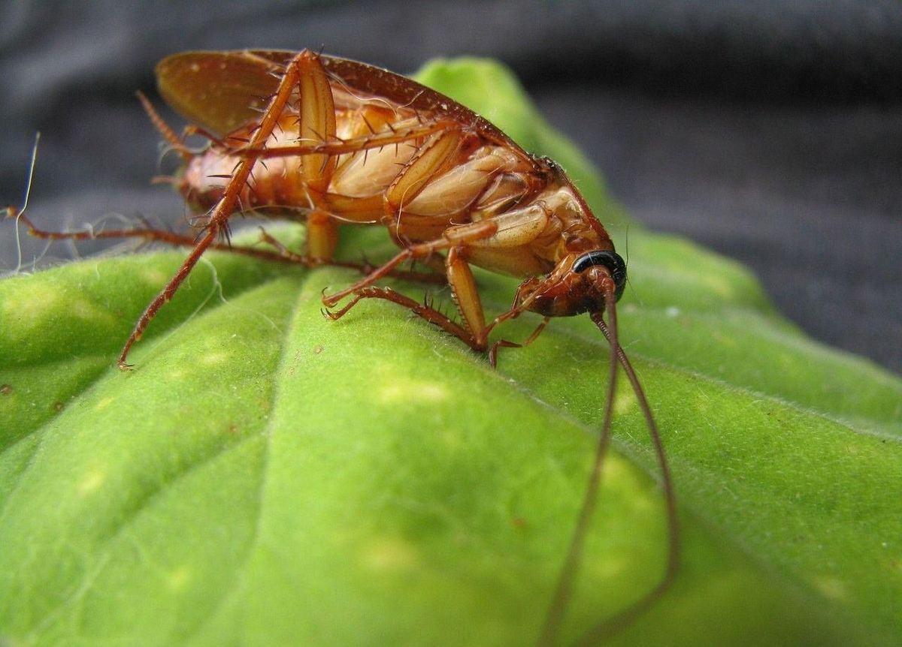

Cafards & Blattes en Corse : Traitement Professionnel
Le cafard, ou blatte, est un insecte nocturne qui vit caché et se reproduit vite. Deux espèces dominent : la blatte germanique en cuisine, la blatte orientale en cave et en sous-sol. Un traitement professionnel vise les nids, pas les individus que l'on voit la nuit.

Identification & risques
Blatte germanique
La plus fréquente en habitat et en restauration : petite (12-15 mm), rapide, brun clair.
Se reproduit très vite — une femelle peut produire plusieurs centaines de descendants en quelques mois.
Nidifie près des sources de chaleur et d'humidité : derrière l'électroménager, sous l'évier, dans les gaines techniques.
Blatte orientale
Plus grande (20-30 mm), brun foncé à noire, se déplace plus lentement.
Affectionne les caves, sous-sols, vide-sanitaires et regards humides.
Souvent liée à un point d'humidité ou une communication avec les réseaux d'évacuation.
Risques sanitaires
Contamination potentielle des surfaces et denrées alimentaires par contact.
Mues et déjections pouvant aggraver certaines allergies respiratoires.
Enjeu de conformité HACCP pour les professionnels de la restauration et de l'hôtellerie.
Cafards et allergies respiratoires
Les cafards sont l'un des principaux allergènes de l'air intérieur, au même titre que les acariens. Ce ne sont pas les insectes eux-mêmes qui déclenchent la réaction, mais des protéines contenues dans leurs déjections, leurs mues et leurs cadavres : en séchant, elles se réduisent en poussière, se mélangent à celle du logement et sont respirées. C'est pourquoi une personne peut réagir sans jamais avoir vu un cafard.
Ces allergènes s'accumulent là où les blattes circulent : sous l'évier, derrière l'électroménager, dans les plinthes, les placards et les gaines. La poussière les transporte ensuite dans tout le logement, et ils se déposent sur les textiles — tapis, rideaux, literie, canapés — qui les retiennent durablement.
Qui est concerné
Les enfants : ce sont eux qui passent le plus de temps au sol, là où la poussière se dépose. L'exposition aux allergènes de blattes est reconnue comme un facteur aggravant de l'asthme infantile.
Les asthmatiques et allergiques : l'exposition entretient l'inflammation des voies respiratoires et augmente la fréquence des crises.
L'habitat collectif : immeubles, résidences, logements mitoyens. Les blattes circulent par les gaines et les vide-ordures d'un appartement à l'autre, et l'exposition ne dépend pas que de votre propre logement.
Confusion fréquente : ces signes ressemblent à une allergie aux acariens ou à un rhume traînant, et l'origine passe souvent inaperçue.
Indice utile : des symptômes qui s'atténuent nettement lors d'une absence prolongée du logement, et reviennent au retour, orientent vers un allergène domestique.
Éliminer les cafards ne suffit pas
C'est le point le plus souvent ignoré : les allergènes ne disparaissent pas avec les insectes. Ils restent dans la poussière et les textiles pendant des mois après la fin de l'infestation, et continuent d'entretenir les symptômes alors même qu'on ne voit plus aucune blatte.
Le traitement biocide est donc une première moitié du travail. La seconde vous revient, une fois l'activité arrêtée :
Aspirer soigneusement, de préférence avec un filtre HEPA, en insistant sur les plinthes, les angles, le dessous et l'arrière de l'électroménager.
Laver les textiles à la température la plus élevée que le linge supporte : literie, rideaux, housses, tapis lavables.
Nettoyer les surfaces à l'humide plutôt qu'à sec. Un chiffon sec ou un balai remet les particules en suspension, c'est-à-dire exactement ce qu'il faut éviter.
Aérer quotidiennement, et vérifier que la ventilation de la cuisine et de la salle de bains n'est pas obstruée.
Si des symptômes respiratoires persistent chez un enfant ou une personne asthmatique après le traitement, parlez-en à un médecin : un test allergologique permet de confirmer l'origine et d'adapter la prise en charge. Pour la partie qui nous concerne, décrivez-nous la situation — en habitat collectif notamment, un traitement limité à un seul logement laisse la source intacte chez les voisins.
Comment se déroule un traitement contre les cafards ?
Le traitement des cafards vise les nids, pas les individus qu'on voit. Nous inspectons d'abord les zones à risque — derrière l'électroménager, les plinthes, les gaines techniques, les faux-plafonds — puis nous appliquons un gel insecticide sur les zones de passage et une poudre dans les recoins inaccessibles. Des plaques de piégeage mesurent ensuite la baisse de l'infestation.
Diagnostic
Repérage des zones de nidification
Inspection des zones à risque (derrière électroménager, plinthes, gaines techniques, faux-plafonds) pour localiser les foyers, souvent invisibles en journée.
Action ciblée
Gel & poudre insecticide professionnels
Application d'un gel insecticide dans les zones de passage et de nidification, complétée par une poudre dans les zones inaccessibles (gaines, plinthes creuses) pour une action prolongée.
Suivi
Contrôle & plaques de piégeage
Pose de plaques de piégeage pour suivre l'évolution de l'infestation et confirmer l'efficacité du traitement, avec passage de contrôle si nécessaire.
Foire aux questions — Cafards
Pourquoi je ne vois des cafards que la nuit ?
Les blattes sont des insectes lucifuges : elles fuient la lumière et restent cachées le jour dans des zones étroites et humides. Les voir en pleine journée est souvent le signe d'une infestation déjà importante.
Combien de temps faut-il pour un traitement efficace ?
Une baisse d'activité est généralement visible en une à deux semaines après traitement par gel, le temps que l'effet se propage dans la colonie. Un contrôle de suivi confirme l'éradication.
Intervenez-vous en restauration selon les normes HACCP ?
Oui, avec des protocoles adaptés aux établissements recevant du public et un suivi documenté pour vos contrôles sanitaires.
Comment éviter une réinfestation depuis les parties communes ?
En copropriété, les cafards circulent souvent par les gaines techniques communes. Un traitement coordonné avec les logements ou parties communes voisines limite fortement le risque de retour.
D'où viennent les cafards dans un appartement ?
Ils entrent rarement par la porte. Trois voies dominent : les gaines techniques et les canalisations, qui relient les logements d'un même immeuble et constituent le chemin principal en habitat collectif ; les objets rapportés — cartons de livraison, cageots, sacs de courses, électroménager d'occasion —, dans lesquels les blattes et leurs oothèques voyagent sans être vues ; et les parties communes, locaux à poubelles et caves. Un logement propre n'est pas protégé pour autant : les blattes cherchent de la chaleur, de l'eau et un abri étroit, pas de la saleté. Si elles s'installent en cuisine et en salle de bains, c'est parce que ces deux pièces réunissent les trois.
Comment se débarrasser des cafards définitivement ?
« Définitivement » suppose deux choses distinctes : éliminer la colonie, puis supprimer ce qui la ferait revenir. Le gel insecticide professionnel règle la première : appliqué en points ciblés, il agit par effet domino et atteint les individus que l'on ne voit jamais, y compris dans les nids. Mais si les passages restent ouverts, si l'humidité persiste sous l'évier, ou si le logement voisin est infesté, une nouvelle population s'installera. Un résultat durable combine donc le gel, un contrôle de suivi quelques semaines plus tard, l'obturation des passages, la suppression des points d'eau stagnante — et, en immeuble, une intervention coordonnée avec les logements voisins. Les aérosols du commerce font l'inverse : ils dispersent les blattes vers d'autres pièces et favorisent des populations résistantes.
Interventions sur l'ensemble de la Haute-Corse et de la Corse-du-Sud